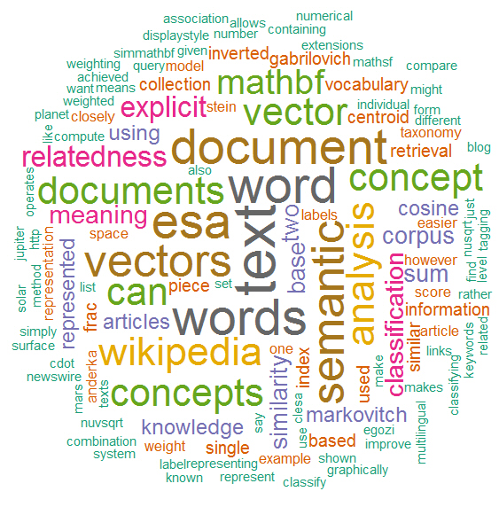
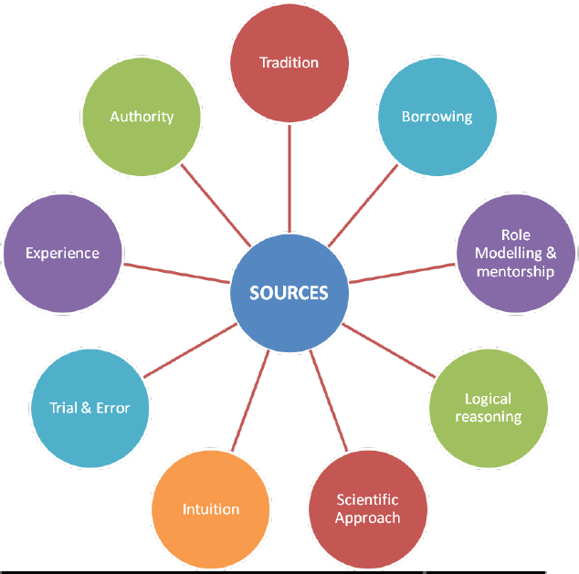
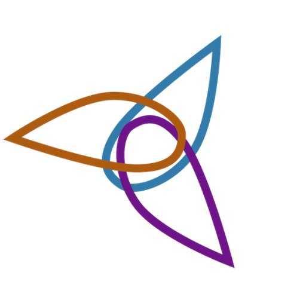
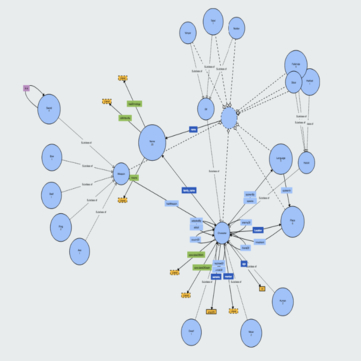

Introduction
General description of our project
This project is aimed at representing a knowledge graph of the philological work about the sources and versions of a literary work, and creating a web page which makes the philological knowledge accessible to casual users.
As useful tools for sharing and exchanging knowledge, ontologies are a formal, explicit specification of a shared conceptualization. We chose to create a knowledge graph that connects some of the characters of the The Lord of the Rings - The Fellowship of the Ring, analyzing their relationships and the etymology of their names.
We decided to build our ontology around the book titled The Fellowship of the Ring, namely, the first book of the renowned trilogy The Lord of the Rings, written by the British author J. R.R. Tolkien. The choice was due to our shared interest regarding the topic, but also to the versatility of the book; as a matter of fact, when writing his masterpiece, Tolkien spent a lot of time taking care of every single detail, names creation included, merging his philological and linguistic knowledge with a lot of fantasy and semantic research.
Our Workflow
The methodology we followed
-

Linguistic analysis
Choosing a linguistic work
We gathered information concerning name's etymology both from Fisher’s article and from other reliable sources that we found online. LEARN MORE
-

Textual analysis
Use of sentiment analysis techniques to get the relationships between the characters
We wrote and used a Python code to automatically understand wheter the relationship between two characters is positive or negative.LEARN MORE
-

Representation of the information
Choosing the information to represent
We enriched our research's value by identifying the most relevant concepts that were worthy representing.LEARN MORE
-

Ontology creation and structuring
Creation of LOTRO ontology
After having structured classes and relationships to represent, we used the software Protégé to create the LOTRO ontology.LEARN MORE
-

Ontology Visualization
Visualization methods to represent our ontology
We visualized our ontology in three different ways: RDF grapher, Widoco documentation and WebVOWL visualization.LEARN MORE
-
Our Analysis
A first glance at our work
Linguistic Analysis
Everyone who knows the name of J. R.R. Tolkien is also aware of the keen interest that the British writer nurtured in Anglo-Saxon literature and linguistics and, consequently in the wide meaning which lies beyond the surface of the words.
Thanks to his broad knowledge of philology, he could develop a world where nothing is a random element. As a matter of fact, characters’ names in The Lord of the Rings are always created according to an etymological research. Moreover, the names’ meaning is often implying a particular kind of behavior that the character is supposed to have.
We gathered information concerning the names’ etymology thanks to Ellen Rose Fisher’s article and other reliable sources and readings that we found online such as the Tolkien Gateway website.
Textual Analysis
Machines can access huge databases and elaborate a long text in a short time. Can we produce innovative interpretations of a text by using techniques which rely heavily on computer programs?
The technique called sentiment analysis, allows one to quantify and track emotions from a text corpus, be it big or small. We used this method in order to determine two entities’ emotion association. We did so by taking into consideration and analyzing the co-occurring words in a sample of paragraphs where the two entities appear together.
Another tool that we used for our research is FRED. It extracts, from natural language sentences, event-based knowledge that can be used to automatically produce RDF/OWL ontologies and linked data.
Natural language can be automatically translated into a formal structured knowledge that can be interpreted by machines according to a shared semantics. We analyzed FRED’s output graphs in order to extract useful information to define some properties of our ontologies.
Representation of the information
Humans have the ability to contextualize data providing a sense and a context to them through their personal knowledge of the topic, but a casual user may be unaware of the events or the characters that populate The Lord of the Rings - The Fellowship of the Ring. Furthermore, we needed to make this data understandable also by computer programs. For these reasons, we created relationships and chose the information that we wanted to represent in our ontology in order to provide both casual users and computer programs with the most important knowledge about the topic.
To summarize, with our work, we collected some data from texts, literature and research and we inserted them in the right context elaborating some information that we considered relevant. In succession, we organized this information in structured knowledge, with a specific a purpose: providing basic knowledge of the topic in an accessible way for casual user and software agents.
Ontology Creation
An ontology is a machine-readable abstract model of some phenomenons that identify concepts explicitly defined. In order for our knowledge to be shared with casual users and software agents, we needed it to be structured in a logic way that had also to be easily translated into a machine-readable code.
We created a domain ontology with conceptualization of concepts (the concept of “name” in particular), relations and attributes belonging to a particular field of interest, namely, The Lord of the Rings - The Fellowship of the Ring, the first part of J. R. R. Tolkien’s most famous trilogy.
We chose the classes that represent the concepts and we structured them into a taxonomy. Then we defined relationships, to represent their associations and properties in order to define some characteristics and features of the objects. Finally, we created some entities with the purpose of verifying our ontology structure and providing the users with some basic knowledge of the topic.
Ontology Visualization
Given that one of our main purposes consists of making the knowledge we gained accessible to everyone, we used some tools that allowed us to represent in a suitable way our ontology. We decided to use Widoco, WebVOWL and RDF Grapher.
Click here to view the LOTRO Ontology documentation published thanks to Widoco and WebVOWL.
Click here to view the outcome of loading the Turtle code of the ontology on RDF Grapher tool.
You can even see the XML/OWL code of LOTRO ontology by clicking here.
Our Team
Davide Apolloni
Close reading analysis, ontology creation, structuring and visualization & linguistic analysis.
Alessandra Auddino
Linguistic analysis, close reading analysis, ontology creation and structuring & FRED analysis.
Hizkiel Mitiku
Distant reading techniques, sentiment analysis & programming
The LOTRO ontology is a project realized by Davide Apolloni, Alessandra Auddino and Hizkiel Mitiku, students of Digital Humanities and Digital Knowledge at Alma Mater Studiorum - Università di Bologna.